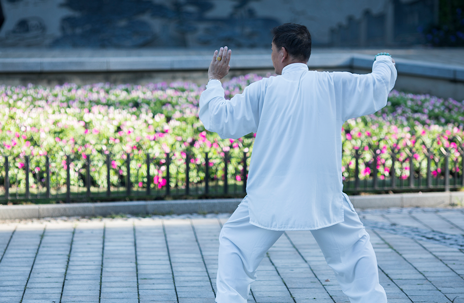

太极人物/
ENTERPRISE TRAINING
当前位置：
- 太极人物 >>
- 陈照森
当前位置：
- 太极人物 >>
- 陈照森
陈照森
陈照森：男，一九五七年农历十月十八日出生于太极拳发源地--河南省温县陈家沟，系陈氏第十九世，太极拳第十一代传人。非物质文化遗产传承人,国际太极拳文化传播大使。精通陈氏传统太极拳、养生功、推手、太极长短器械等，其春秋大刀堪称一绝，人称“大刀王”。 1979年开始赴外地授拳，先后应邀在河南、河北、山西、安徽、山东、福建、江西、海南等地传授陈氏太极拳，培育学生近万名；1983年至今，多次带队任教练，参加各级武术比赛，获得金、银牌各数百枚；

1983年至2000年在中国首家专业陈式太极拳学校---陈家沟太极拳学校任主教练、校长等职；1979年至1988年，在各级太极拳比赛中蝉联太极拳械、推手第一名； 1988年参加首届全国农运会，获优秀奖，以优异成绩被评为该届农运会各类项目中武术类**的一个“十佳运动员”，受到*****田纪云、***亲自接见，在《人民日报》等各大报刊报导； 1993年被授予“河南省一级拳师”称号；1995年被授予“河南省优秀武术辅导员”称号；1998年荣获国际太极拳推广交流精英比赛优秀表演奖。2000年凭拳技与武德，被评为“陈氏太极拳十大拳师”。2009年6月，被焦作市文化局命名为“焦作市市级非物质文化遗产项目（陈氏太极拳）代表性传承人”。2009年中国河南首届国际太极拳文化研讨会授予其“国际太极拳文化传播大使”金领大使封号,2010年被命名为河南省非物质文化遗产传承人。 陈照森现任陈家沟太极拳功夫学校校长、陈家沟太极拳功夫协会总会会长、陈家沟太极拳总会副会长、陈家沟太极拳推广中心技术顾问、中国太极**聘武术顾问、孟州市青少年武术学校总指导、宜昌市太极拳研究会名誉会长、北京陈式太极拳研发中心主任、青海省陈式太极拳名誉会长等职。其主要事迹已被《陈式太极拳志》、《当代武术家词典》、《焦作市志》、《中国体育年鉴》、《中国太极拳优秀人才》等收录。陈照森在总结自己近四十年研习太极拳心得、结合近三十年的教学经验的基础上创编了《陈氏太极拳精练26式》，录制发行了《陈氏太极拳视听教程》示范讲解教程。 陈照森性情豪爽刚直，为人方正，武德高尚，虚怀若谷。带徒授业二十多个春秋，严于律己，精益求精，对弟子学生严慈共济，以高超的拳技和高尚的武德享誉四海。